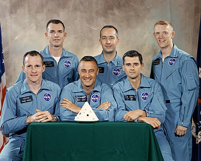
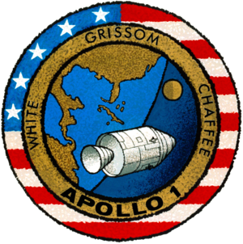
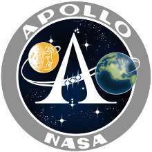
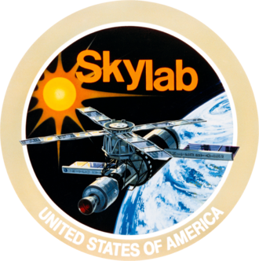
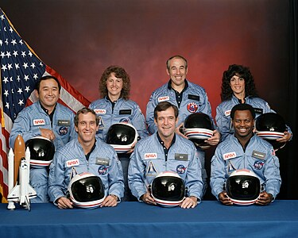
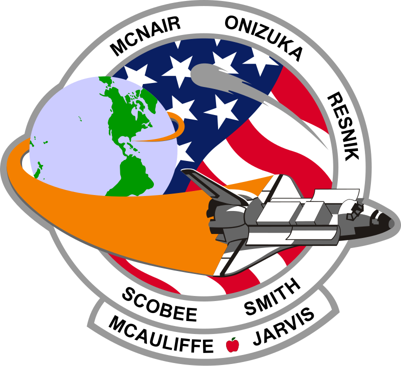
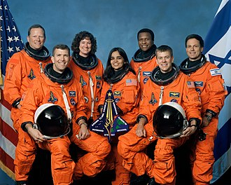
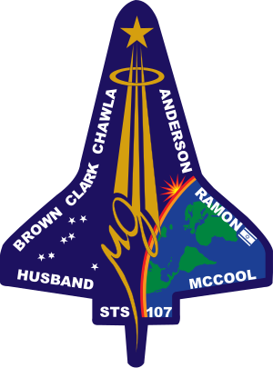
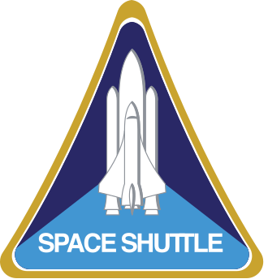

Les différents programmes spacial de la NASA habités
Programme Gemini
Le programme Gemini, mené par la NASA entre 1961 et 1966, a été une étape cruciale dans la préparation des missions lunaires du programme Apollo. Il a permis de développer et de tester des technologies nécessaires à l'exploration de l'espace lointain, notamment les manœuvres en orbite, les sorties extravéhiculaires (EVA) et les rendez-vous spatiaux.
Objectifs du programme Gemini :
- Test des manœuvres en orbite : Permettre aux astronautes de se déplacer d'un vaisseau spatial à un autre en orbite.
- Sorties extravéhiculaires (EVA) : Développer les capacités des astronautes à sortir de leur vaisseau pour travailler dans l'espace.
- Rendez-vous spatial : Tester la capacité à rencontrer et à se joindre à d'autres vaisseaux spatiaux en orbite, un élément clé pour Apollo.
- Préparation à la mission lunaire : Acquérir l'expérience nécessaire pour les missions lunaires en augmentant la durée des vols et en gérant les défis techniques de l'exploration spatiale.
Les missions Gemini en quelques mots :
- Gemini 3 (1965) : Première mission du programme, avec l'équipage constitué de Gus Grissom et John Young. Ils ont réalisé la première mise en orbite d'un vaisseau avec deux astronautes à bord.
- Gemini 4 (1965) : Première sortie extravéhiculaire (EVA) réalisée par Ed White.
- Gemini 6A et Gemini 7 (1965) : Première rencontre spatiale entre deux vaisseaux, démontrant la capacité de se rejoindre en orbite.
- Gemini 12 (1966) : Dernière mission du programme Gemini, marquée par un grand succès dans l'exécution d'une EVA prolongée et le perfectionnement des techniques de rendez-vous.
Faits marquants du programme Gemini :
- Le programme a permis de réaliser 10 missions spatiales et a préparé le terrain pour les missions Apollo en développant des compétences clés comme la manœuvre dans l'espace et la sortie extravéhiculaire.
- Les sorties extravéhiculaires (EVA) ont été testées avec succès, ouvrant la voie aux futures explorations sur la Lune et au-delà.
- Les missions Gemini ont permis des séjours prolongés dans l'espace, préparant les astronautes aux longues durées de mission nécessaires pour Apollo.
Pourquoi le programme Gemini est-il important ?
Le programme Gemini a été essentiel pour le succès d'Apollo. En testant des technologies avancées, en améliorant les techniques de vol spatial et en préparant les astronautes à des missions longues et complexes, Gemini a constitué une étape indispensable avant la grande aventure lunaire. Grâce à ce programme, la NASA a pu surmonter des défis technologiques majeurs, ouvrant ainsi la voie aux missions spatiales futures.
Programme Apollo
Le programme Apollo, mené par la NASA, a marqué un tournant dans l'exploration spatiale en envoyant des astronautes sur la Lune. Ce programme historique, lancé en 1961 par le président John F. Kennedy, a abouti à l'alunissage de la mission Apollo 11 en 1969, où Neil Armstrong et Buzz Aldrin sont devenus les premiers humains à marcher sur la surface lunaire.
Objectifs du programme Apollo :
- Atteindre la Lune : L'objectif principal était de poser un homme sur la Lune et de ramener des échantillons lunaires.
- Tester la technologie spatiale : Développer des fusées, des modules lunaires et des technologies de communication pour des missions spatiales plus lointaines.
- Explorer la Lune : Recueillir des données géologiques et biologiques pour mieux comprendre l'histoire de la Lune et du système solaire.
- Innover dans la recherche scientifique : Réaliser des expériences scientifiques et fournir des informations sur l'impact de l'espace sur le corps humain.
Les missions Apollo en quelques mots :
- Apollo 1 (1967) : Mission tragiquement marquée par un incendie au sol qui a coûté la vie à trois astronautes.
- Apollo 11 (1969) : Première mission à poser un homme sur la Lune, avec les astronautes Neil Armstrong et Buzz Aldrin.
- Apollo 13 (1970) : Mission qui a failli échouer après une explosion, mais qui a réussi à ramener l'équipage sain et sauf grâce à une ingénierie improvisée.
- Apollo 17 (1972) : Dernière mission lunaire, marquée par la collecte de 110 kg de roches lunaires et une exploration de 36 km à la surface de la Lune.


Faits marquants du programme Apollo :
- Le programme Apollo a envoyé 24 astronautes autour de la Lune, dont 12 ont marché sur sa surface.
- Les missions Apollo ont permis de ramener plus de 380 kg de roches lunaires sur Terre.
- La mission Apollo 11 a permis à l'humanité de réaliser un exploit monumental : "Un petit pas pour l'homme, un grand pas pour l'humanité".
Pourquoi le programme Apollo est-il important ?
Le programme Apollo a non seulement permis à l'humanité de conquérir la Lune, mais a aussi posé les bases des futures explorations spatiales. Il a démontré la puissance de l'innovation, de la collaboration et de la détermination. Apollo a également transformé notre compréhension de l'univers et a inspiré des générations entières à rêver plus grand.

Programme Skylab
Le programme Skylab, lancé par la NASA en 1973, a marqué l'ère des stations spatiales américaines et a ouvert la voie à une nouvelle étape dans la recherche scientifique en microgravité. Skylab a été la première station spatiale des États-Unis, et elle a joué un rôle clé dans l'étude de l'impact de l'espace sur le corps humain, tout en effectuant des recherches scientifiques avancées.
Objectifs du programme Skylab :
- Étude de la physiologie humaine en microgravité : Examiner comment le corps humain réagit à long terme dans l'espace.
- Recherche scientifique : Conduire des recherches sur la physique solaire, l'astronomie, et la biologie dans un environnement de microgravité.
- Développement de nouvelles technologies : Tester des équipements pour améliorer les futures missions spatiales.
- Préparation pour de futures stations spatiales : Poser les bases pour des stations spatiales à long terme comme la Station Spatiale Internationale (ISS).
Les missions Skylab en quelques mots :
- Skylab 1 (1973) : Le premier vol habité vers Skylab, avec la mise en orbite de la station et l'équipage des missions de suivi. L'équipage a effectué des réparations et des ajustements pour assurer le bon fonctionnement de la station.
- Skylab 2 (1973) : Première mission habitée vers Skylab. L'équipage a effectué des travaux d'entretien et de recherche dans la station.
- Skylab 3 (1973) : Cette mission a permis d'étudier l'effet de la microgravité sur le corps humain, tout en poursuivant des recherches scientifiques.
- Skylab 4 (1974) : Dernière mission de Skylab. Les astronautes ont passé plus de 84 jours dans l'espace, effectuant des expériences scientifiques et photographiant le soleil et d'autres corps célestes.
Faits marquants du programme Skylab :
- Skylab a été la première station spatiale américaine et la première à permettre des séjours de longue durée dans l'espace.
- Les missions ont permis de collecter des données précieuses sur l'effet de la microgravité sur le corps humain, notamment les pertes osseuses et musculaires.
- Skylab a été le premier laboratoire spatial à mener des recherches sur la physique solaire, observant des événements solaires comme les éruptions et les taches solaires.
- Skylab a joué un rôle clé dans le développement des technologies de la NASA pour des stations spatiales futures, influençant la conception de la Station Spatiale Internationale (ISS).
Pourquoi le programme Skylab est-il important ?
Skylab a été un programme pionnier dans l'exploration des effets de l'espace sur le corps humain et la recherche scientifique en microgravité. Bien qu'il ait été mis hors service en 1974, ses contributions ont influencé directement les missions spatiales à venir. Grâce à Skylab, la NASA a pu tester de nouvelles technologies et méthodes de travail dans l'espace, ce qui a préparé le terrain pour des missions comme la station spatiale internationale (ISS) et les futures explorations humaines dans l'espace profond.

Navettes Spatiales Américaines : Le Programme Space Shuttle
Le programme Space Shuttle a marqué une avancée majeure dans l'histoire de l'exploration spatiale. Il a permis de développer des navettes réutilisables, capables de transporter des astronautes et des équipements dans l’espace à un coût réduit par rapport aux précédents lancements.
Les Navettes Spatiales
Le programme Space Shuttle a vu la conception de cinq navettes spatiales. Voici un résumé des navettes principales :
1. Columbia (OV-102)
- Premier vol: 12 avril 1981 (Mission STS-1)
- Rôle: Première navette spatiale de la NASA, utilisée pour les missions expérimentales, scientifiques et pour la mise en orbite de satellites.
- Fin de service: Perdue lors de la mission STS-107, le 1er février 2003, lors de la rentrée atmosphérique.
2. Challenger (OV-099)
- Premier vol: 4 avril 1983 (Mission STS-6)
- Rôle: Première navette à déployer des satellites commerciaux et scientifiques. Elle a aussi joué un rôle clé dans la construction de la station spatiale.
- Fin de service: Perdue lors de la mission STS-51-L, le 28 janvier 1986, après l'explosion peu après le lancement, causant la mort de sept astronautes.
3. Discovery (OV-103)
- Premier vol: 30 août 1984 (Mission STS-41-D)
- Rôle: Navette de choix pour plusieurs missions scientifiques et commerciales, y compris la mise en orbite du télescope spatial Hubble.
- Fin de service: Retirée en 2011 après avoir effectué 39 missions.
4. Atlantis (OV-104)
- Premier vol: 3 octobre 1985 (Mission STS-51-J)
- Rôle: Utilisée pour des missions variées, notamment la construction de la Station Spatiale Internationale et la livraison de composants de la station.
- Fin de service: Retirée en 2011 après avoir effectué 33 missions, lors de la dernière mission du programme (STS-135).
5. Endeavour (OV-105)
- Premier vol: 7 mai 1992 (Mission STS-49)
- Rôle: Conçue pour remplacer Challenger après sa perte. Elle a effectué des missions de maintenance sur la Station Spatiale Internationale.
- Fin de service: Retirée en 2011 après avoir effectué 25 missions.
Missions et Réalisations Majeures
Les navettes spatiales américaines ont joué un rôle clé dans la recherche spatiale et les missions scientifiques. Certaines des réalisations les plus notables comprennent :
- Mise en orbite du télescope spatial Hubble: La navette Discovery a déployé ce télescope en 1990, permettant de réaliser des avancées majeures dans l’astronomie.
- Construction de la Station Spatiale Internationale (ISS): À partir de 1998, les navettes ont transporté des modules de la station, contribuant à sa construction et à son approvisionnement continu.
- Lancement et réparation de satellites: Les navettes ont été utilisées pour placer en orbite des satellites de communication et d’observation de la Terre, ainsi que pour effectuer des réparations, comme le remplacement de composants du Hubble Space Telescope.
Accidents Tragiques
Le programme a été marqué par deux grands accidents :
- Explosion de la Challenger: En 1986, après 73 secondes de vol, la navette Challenger a explosé, tuant sept astronautes. Cet accident a profondément choqué la nation et a conduit à une révision complète du programme.
- Désintégration de la Columbia: En 2003, lors de son retour sur Terre après une mission, la navette Columbia a désintégré à cause de dommages subis lors du lancement. L'accident a coûté la vie à sept autres astronautes.




Héritage et Fin du Programme
Le programme Space Shuttle a été officiellement retiré en 2011 après la mission STS-135, la dernière mission de la navette Atlantis. Malgré ses échecs tragiques, il a ouvert la voie à des missions spatiales plus ambitieuses, dont la construction de la Station Spatiale Internationale et les missions vers Mars. Les navettes ont démontré la faisabilité des vaisseaux réutilisables, un concept qui influence encore les technologies spatiales actuelles, telles que le SpaceX Falcon 9.
Impact de la NASA et du Programme
Le programme Space Shuttle a eu un impact considérable sur l'exploration spatiale, en augmentant la capacité de transport et en ouvrant de nouvelles avenues pour les sciences et la coopération internationale. La fin du programme a conduit à une nouvelle phase dans l'exploration spatiale, avec un plus grand focus sur les stations spatiales et les voyages vers des destinations plus lointaines comme Mars.
Ce programme reste l'un des plus ambitieux et des plus importants de l'histoire spatiale moderne.
